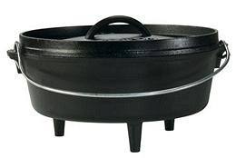

SAFARI
Users
Making Bread

Bread was never a staple for the common people of Ireland. Thin unleavened cakes could be cooked on a hot rock, and later in a frying pan, but you had to be able to afford grain. Anything much beyond that had to be baked on hot rocks with the cauldron inverted over it. This was very inconvenient, because the cauldron was needed for boiling. Few households had the resources to have an extra cauldron. Also, the low gluten wheat flour available in Ireland wasn't ideal for yeast leavened bread.
The potato was probably introduced to Ireland in 1588, from ships of the Spanish Armada wrecked on the Irish coast. The Spanish used potatoes on their ships to ward off scurvy. Potatoes were easy to grow in Ireland and grains weren't. The cauldron became very busy boiling potatoes, and the Irish ate little else. Potatoes are so nutritious they needed nothing more except a little milk.
Then came the Great Potato Famine of 1845 to 1852, bringing mass starvation. There was plenty of food in Ireland, but the British controlled it and would not let it be distributed - their deliberate policy was for the Irish to all starve to death.
After the famine, interest in bread was revived. While flour was still very expensive, and homes were still not set up for handling bread dough, two things made it easier. The first was importation of the concept of baking soda from North America. The other was manufacture of the Bastable Oven (see photo). Soda bread could be mixed up and immediately baked in this oven over hot coals, with more hot coals shoveled onto the rimmed top.
Today Ireland is famous for soda breads of many kinds, though the arrival of real stoves with ovens in the household has greatly reduce use of the bastable oven. Photo borrowed from Lodge Manufacturing, a company that still makes these ovens .
Varieties of Bread
Soda Bread
Though today Ireland is known as the land of soda bread, it was completely
unknown there until the early 1800s and did not become widely known until
after the Great Potato Famine, which ended in 1852. The concept of
leavening bread with acid and baking soda had been long in use by the
American Indians (who used ashes) and had been used for some time by
Europeans in North America. This quick, very simple method of making
bread suited the poorly equipped Irish household, and also worked with
the low gluten flour available in Ireland. The photo specimen is made of
half and half white and whole wheat flour, by our recipe
Irish Soda Bread.